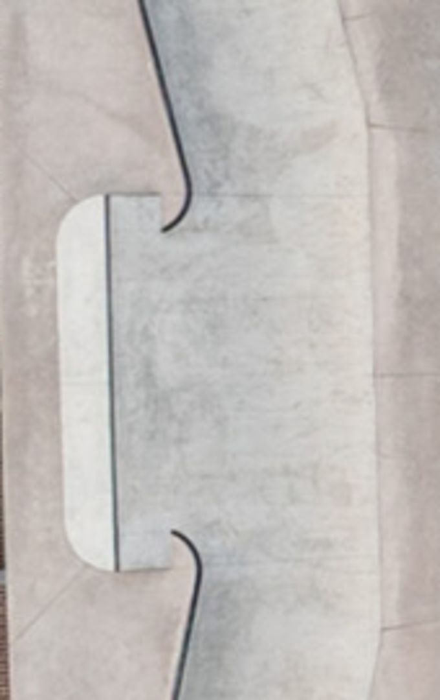
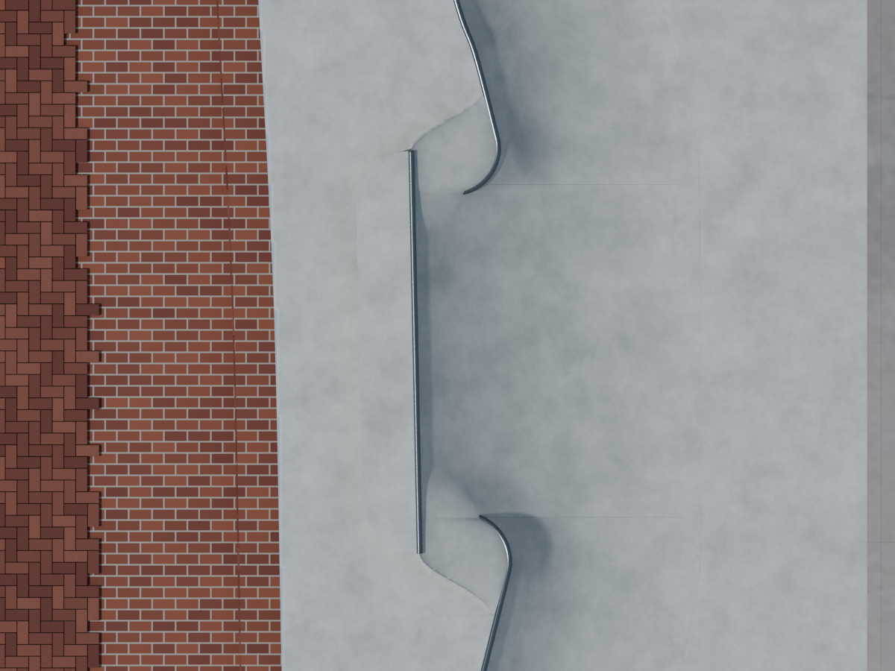
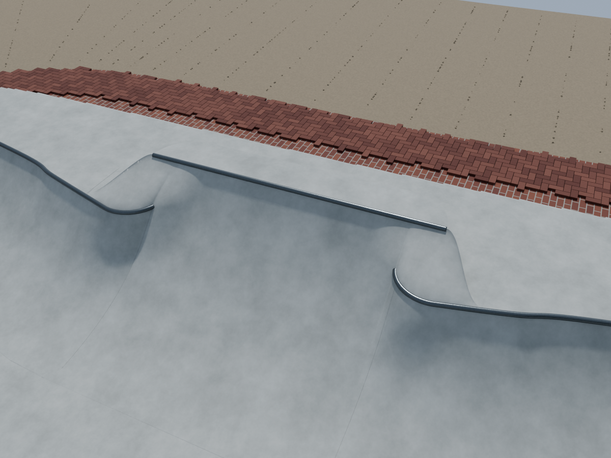
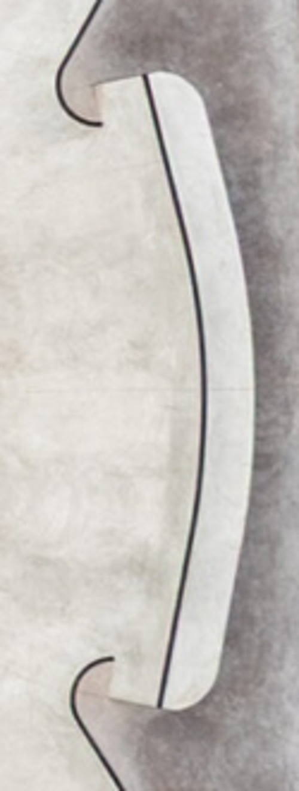
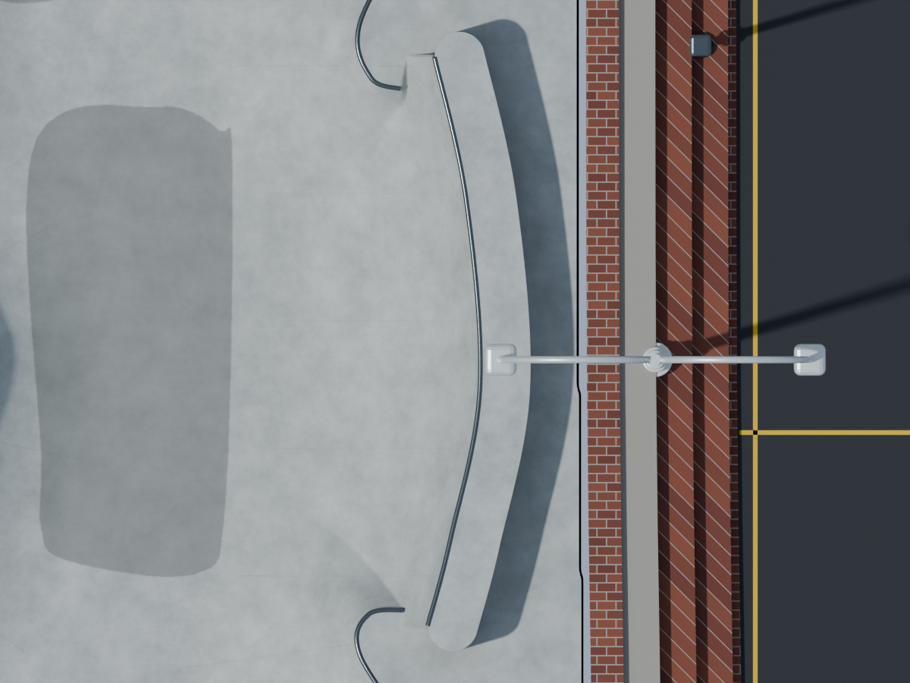
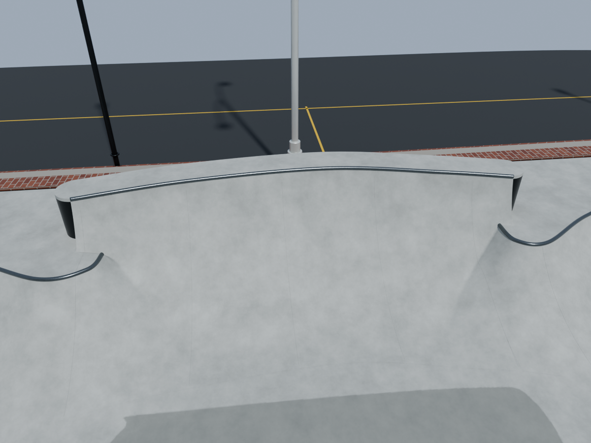

Museumplein: ronde uiteinden en ontbrekende coping
De hoekige S-vormen zijn vervangen door ronde haakvormige uiteinden die vanaf het bovenaanzicht zijn overgetrokken. Het beton sluit daar op aan. Het hogere plateau heeft nu een afgeronde achterrand van circa 50 cm diep. Op de verhoging langs het basketbalveld zit een zichtbare ronde metalen coping.
Definitief Blender-model · Controles en scores
Afgeronde uiteinden

Uitsnede van jouw bovenaanzicht, gedraaid naar de modeloriëntatie.
Nieuw model van bovenaf.
Controle van dichtbij: ronde coping en aansluitend beton.Coping op de hoge bowlrand

De metalen lijn op de hoge rand in de referentie.
Nieuwe ronde coping, op het beton geplaatst.
De ontbrekende coping is nu ook schuin van voren zichtbaar.Volledig bovenaanzicht vergelijken
Dezelfde schaal en oriëntatie als jouw foto. Schuif tussen referentie en model. De globale obstakelposities komen overeen; verwering, omliggende inrichting en sommige oppervlakteranden wijken nog af. Dit is geen exacte fotokopie.
Lokale beoordeling
| Aspect | Ronde 28 | Ronde 29 |
|---|
| Ronde uiteinden | 9,3 | 9,3 |
| Coping en contact | 9,2 | 9,2 |
| Lokale plattegrond | 8,5 | 9,0 |
| Totale foto-overeenkomst | 8,5 | 8,5 |
Zelfbeoordeling, geen landmeetkundige nauwkeurigheidsclaim. De afmetingen zijn uit foto's geschat. Het definitieve bestand is opnieuw geopend en gecontroleerd: circa 4,13 miljoen vertices, 66 gegronde railuiteinden, gesloten metalen copings en ingepakte texturen.